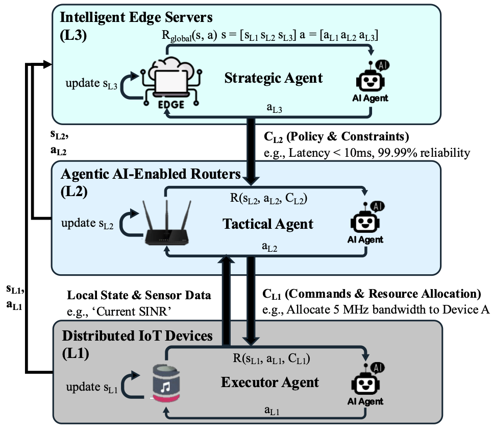
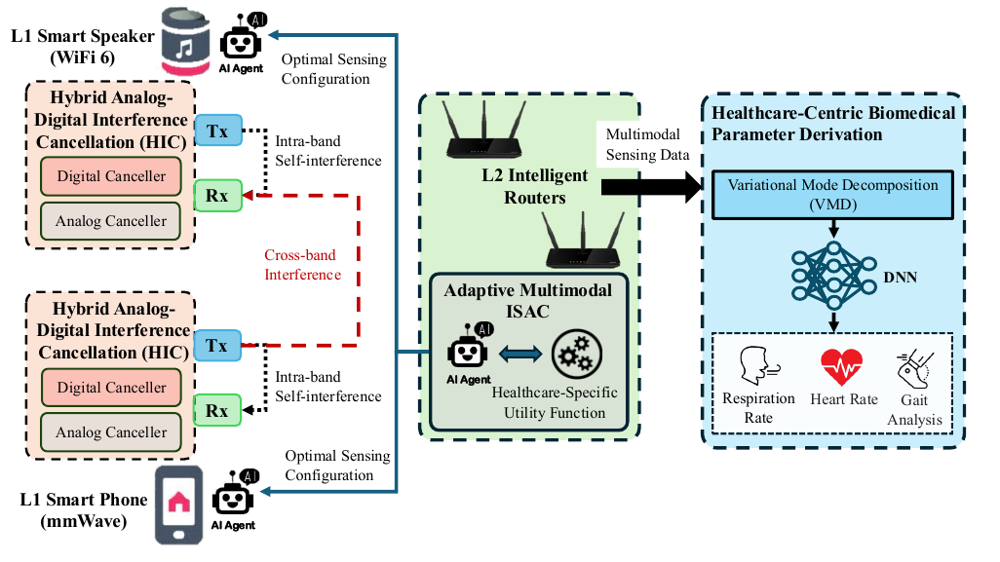
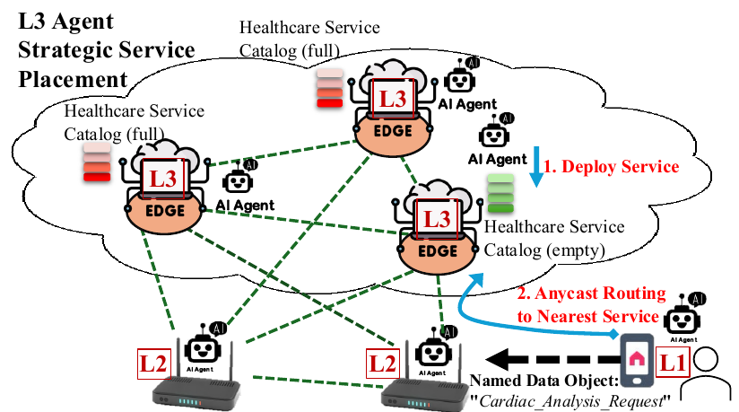
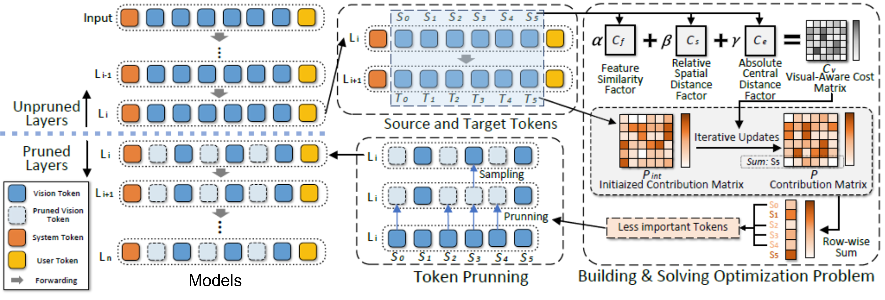

Healthcare on the Go
Toward Agentic AI-powered NextG Network with Integrated Sensing and Communication for IoT-based Healthcare
Continuous healthcare monitoring generates multimodal IoT data that must reach inference services and caregivers with low delay and high reliability. Best-effort wireless networks cannot adequately coordinate sensing quality, traffic urgency, and user mobility at scale. This project investigates how NextG networks can support continuous, proactive healthcare through adaptive control that responds to application needs.
Project Objective
The project aims to design a hierarchical agentic AI-enabled wireless network architecture that integrates sensing and communication (ISAC) for IoT-based healthcare. Target applications include monitoring daily behaviors, detecting dangerous events, tracking vital signs, and assessing sleep quality.
Intellectual Merits
1. Hierarchical Agentic AI Architecture
The proposed architecture connects three levels: smart IoT devices, AI-enabled routers, and intelligent edge servers. AI agents coordinate sensing and local inference at the device level, semantic-aware routing at the router level, and strategic planning at the edge-server level.


2. Robust Multimodal Monostatic ISAC
The team will investigate multimodal monostatic ISAC with AI-controlled cancellation of self- and cross-band interference. Healthcare-focused signal processing will extract vital signs and gait patterns, while confidence-aware inference and hierarchical meta-learning will help the system adapt to new environments.


3. Healthcare Application-aware Routing
Built on Information-Centric Networking, the routing framework will use semantic routing and virtual network functions to connect healthcare requirements with network decisions. Service placement, service anycast, and predictive service migration will support user mobility and timely delivery of critical alerts.


4. Resource-aware Agent Deployment
Tiered inference, compact models, and model compression will address latency, energy, and memory constraints across devices and edge servers. The team will also explore token pruning and memory offloading strategies to reduce inference costs.


Collaboration and Support
Rutgers University leads the project in collaboration with Temple University, with support from the National Science Foundation under awards 2548782 and 2548783. Planned outcomes include reusable prototypes, algorithms, and datasets for research in wireless healthcare systems.
Visit our Contact page to connect with the principal investigators.